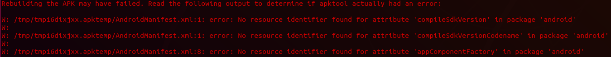

While working on this project, I found lots of documentation that walked me through the steps of defeating SSL Pinning, but I didn’t find any that mentioned the errors that I was facing, which mostly stemmed from Apktool. I don’t know if this will help anyone else with these issues, but I decided to write up my workaround so that hopefully it may help someone else.
I was performing a security assessment of an Android application that had SSL Pinning enabled. If you don’t already know, SSL Pinning essentially allows an application to only trust valid certificates. This is a security feature that is meant to prevent attackers from using proxies and executing man-in-the-middle attacks to intercept and edit the requests being sent and received by the application. If SSL Pinning is not implemented, then you can set up a proxy, such as Burp Suite (https://blog.ropnop.com/configuring-burp-suite-with-android-nougat/), which will allow you to act as a man-in-the-middle intercepting all requests being made by the application. However, if the application has SSL Pinning enabled, the requests will be rejected by the application since it does not trust the certificate that is presented by Burp Suite.
This particular application had previously been tested with SSL Pinning enabled, but at that time, the application did not have any root detection enabled, which meant that it was possible to run the application on a rooted Android device. This allowed for a few options when defeating SSL Pinning (as well as exploiting other security issues). Since then, the development team has implemented root detection, so the application will no longer operate on a rooted device. This greatly improved the overall security of the application, but it made my job much more difficult since I had to find a way to bypass SSL Pinning without a rooted device.
There are several blog posts and other documentation on the internet describing multiple ways to defeat SSL Pinning for both Android and iOS. For example:
According to most of the documentation on the internet, the most popular and easiest solution is through the use of Frida (https://frida.re/). Unfortunately, Frida must be installed on the mobile device (which requires the device to be rooted), so I had to find another solution. The next best solution I found was a tool called Objection (https://github.com/sensepost/objection). Objection uses the same basic technology as Frida and is often used alongside Frida, but it is less dynamic and has less scripting options available. Most importantly though, Objection does not require root since nothing needs to be installed on the device other than the application that you are testing. There is plenty of documentation on the internet on how to use Objection to defeat SSL Pinning, so I began following those steps. To briefly summarize the process (more detailed documentation can be found at the links posted above):
This step is where my problems began to arise...
I made it to step 3 of the instructions that I summarized above before I started getting errors. When Objection tried to rebuild the APK, I was presented with a wall of error messages (shown in the screenshot below), and those error messages suggested that Apktool might be the source of the problem.
Apktool is a tool that is used to reverse engineer and rebuild Android applications, and Objection uses Apktool to handle the unpacking and rebuilding of the APK. Of course, I googled these error messages, but I didn’t have much luck figuring out what the problem was. However, I eventually looked at the version of Apktool that I had installed, and that was when I noticed that the installed version was listed as 2.3.4-dirty. According to a comment from the developer that created Apktool, “dirty means the application was built without git support, so it couldn't pull snapshot information.” For some reason the version of Apktool that was available from the Ubuntu repository was a dirty build, so I removed that build (apt-get remove apktool) and installed the latest build directly from GitHub following the official installation instructions (https://ibotpeaches.github.io/Apktool/install/).
After installing the new version of Apktool, I attempted to complete step 3 again...
This time I did not get the massive wall of errors that I was seeing previously, but I did still get a couple of error messages that mentioned No resource identifier found.
After googling this error message, I found a message board post on GitHub that talked about the exact same error that I was seeing (https://github.com/iBotPeaches/Apktool/issues/1842). This post gave a solution that reportedly solved the issue for multiple people. The solution was to run apktool empty-framework-dir --force, which empties out the framework files that are included with Apktool. Initially, I thought I would have to edit the Objection source code or something more complex in order to implement this solution during the execution of the Objection command. Fortunately, I realized with some trial and error that I could just run apktool empty-framework-dir --force once before running the Objection command, and that would actually fix my issue. I could then use Objection as many times as I would like, and I would no longer get those No resource identifier found errors.
After spending several hours of research and trial and error, step 3 of the original process was finally complete, and I could move on to step 4. The remaining steps to defeat SSL Pinning using Objection are briefly outlined below, but more detailed instructions can be found at the links that I posted above: